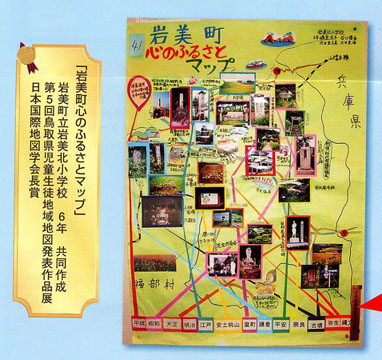

| 「地図」Vol.42 No.2添付地図 |
| “MAP”Vol.42 No.2 Attached Map |
|
2004年 小学生・中学生地図ニュース（掲示用） |
| Map News for Elementary and Junior High School Students |
| 作 成：株式会社 古今書院 |
|
報告・添付地図解説 ：株式会社 帝国書院 地理・地図普及特別班 2004． 「地図作品展の普及に向けて−「小・中学生地図ニュース」．地図 Vol.42 No.2 ： 43． Special Team for Promotion of Maps and Geograhghy, Teikoku-shoin Co.Ltd 2004． Toward the Diffusion of Map Work Exhibitions: Map News for Elementary and Junior High School Students． MAP Vol.42 No.2 ： 43． |
|
添付地図には、平成15年度に開催された地図作品展の優秀作品が両面合わせて17点を掲載しています。全国で行われている作品展のレベルの高さに驚かされるのとともに、地理・地図の普及を願う作成者の意図を、強く感じることができます。なお、今回は、第５回鳥取県児童生徒地域地図発表作品展で日本国際地図学会長賞を受賞した、「岩見町心のふるさとマップ」（岩美町立岩見小学校６年 共同作成）を掲載いたしました。詳しくは、「地図」Vol.42 No.2に掲載の、【報告・添付地図解説】をご覧下さい。 |
|
「岩見町心のふるさとマップ」 （岩美町立岩見小学校６年 共同作成） 第５回鳥取県児童生徒地域地図発表作品展 日 本 国 際 地 図 学 会 長 賞 |
| 
このページに掲載した地図を、許可なく複製・利用することを禁止します。 |